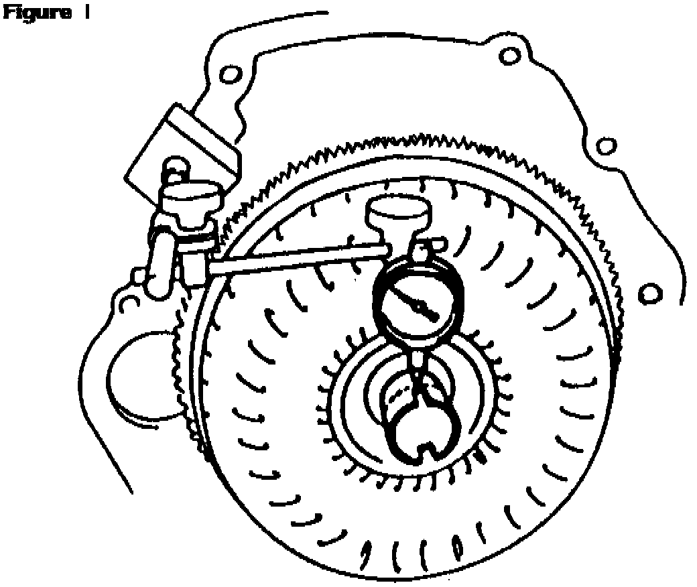
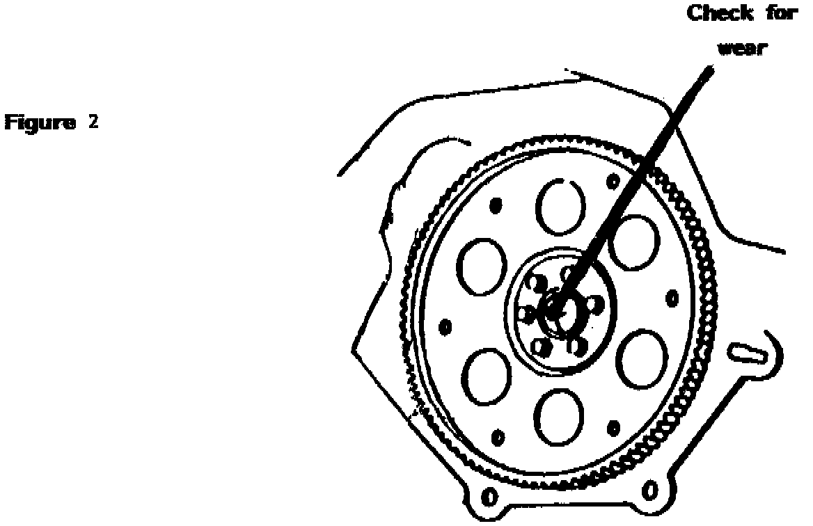

A/T - Front Bushing Wear
TSB 87-54 (Sept)SUBJECT: ALL AUTOMATICS
PROBLEM: Front Bushing Wear
CAUSE:
When diagnosing front pump bushing wear, the cause may be:
1. Excessive CONVERTER HUB RUN-OUT. This may, or may not be due to a faulty torque converter.

The torque converter can be checked visually, and with a dial indicator. (See Figure 1) Hub run-out should not exceed .010".
2. BROKEN, BENT OR CRACKED FLYWHEELS can also cause run-out. If the torque-converter-to-flywheel bolts have been loose, the flywheel holes can become egg-shaped, or the torque converter pads may wear into the flywheel, causing run-out.

3. Another possibility is WEAR IN THE CRANKSHAFT, where it supports the torque converter pilot.(See Figure 2)
Often the crankshaft is only worn in a small area where the torque converter pilot has been against it.
If only a portion of the crankshaft is worn, rotate the crankshaft until the worn area is at 12:00 o'clock.
When the torque converter is pushed forward into the crankshaft, the torque converter pilot will bottom on a good portion, and should center properly.